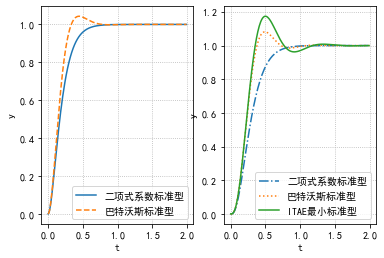
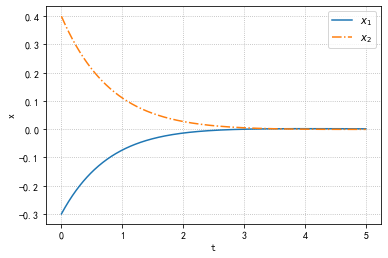
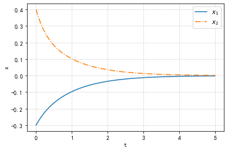

使用模型匹配法进行增益调整
所谓模型匹配法就是通过指定合适的标准模型$\mathcal{M}(s)$尽量的去模拟目标值到控制量的传递函数$\mathcal{G}_{yr}(s)$
标准模型往往采用二项式系数标准型和巴特沃斯标准型
例如,二阶系统的标准模型为:
当我们将阻尼系数$\zeta$设为$\zeta=1$时,就是二项式系数标准型,设为$\zeta=\frac{1}{\sqrt{2}}$为巴特沃斯标准型
而无阻尼自然振荡频率$\omega_n$为决定快速性的参数,值越大控制系统启动上升越快
而对于三阶系统,其标准模型为
当$(\alpha_1,\alpha_2)=(3,3)$时这个模型为二项式系数标准型,当$(\alpha_1,\alpha_2)=(2,2)$时这个模型为巴特沃斯标准型
此外,还有ITAE最小标准型,其可以使误差绝对值的时间加权积分最小,即
值最小,可以将$(\alpha_1,\alpha_2)=(2.15,1.75)$
下面展示了各种标准模型效果
1 | #准备工作 |
1 | fig,axs=plt.subplots(1,2) |

而模型匹配法是通过求取从$r$至$y$的传递函数,并且计算$\frac{1}{\mathcal{G}_{yr}(s)}$和$\frac{1}{\mathcal{M}(s)}$的麦克劳林展开式(即在$s=0$时的泰勒展开)按照顺序使其一致
简单而言就是在前面几阶近似下保持相同(可以假设$s$比较大)
例如机械臂模型,我们就可以有以下形式,我们可以利用
Sympy库对于其进行展开
1 | import sympy as sp |
$\displaystyle \frac{mgl s}{k_{i}} + 1 + s^{2} \left(\frac{k_{d}}{k_{i}} + \frac{\mu}{k_{i}} - \frac{k_{p} mgl}{k_{i}^{2}}\right) + s^{3} \left(\frac{j}{k_{i}} - \frac{k_{d} k_{p}}{k_{i}^{2}} - \frac{k_{p} \mu}{k_{i}^{2}} + \frac{k_{p}^{2} mgl}{k_{i}^{3}}\right) + O\left(s^{4}\right)$
我们可以得到以上结果,与此同时,我们也可以展开$\frac{1}{\mathcal{M}(s)}$的方式得到另外一部分的结果
1 | s=sp.Symbol('s') |
$\displaystyle \frac{j s^{3} + k_{i} + s^{2} \left(k_{d} + \mu\right) + s \left(k_{p} + mgl\right)}{k_{i} + k_{p} s}$
联立两式,我们就可以得到$k_P,k_I,k_D$,在我们这种二阶滞后系统的情况下,可以实现$\frac{1}{\mathcal{G}_{yr}(s)}$和$\frac{1}{\mathcal{M}(s)}$完全一致
这是因为两者阶数恰好相同所以可以完全一致,但是在实际情况下只能大致相同
状态反馈控制
我们前面研究的是关于传递函数的模型,现在我们来研究状态空间模型$\dot{x}=Ax+Bu$所描述的系统
状态空间模型除了输入和输出,还存在有状态,我们可以假定可以通过传感器等观测到这些信息,具体而言,我们考虑如下的状态反馈控制:
通过利用状态$x$的信息,来确定控制输入$u$,此处$F$称为状态反馈增益
我们可以将状态反馈控制看作为一种PD控制,例如对于我们之前讨论的手推车系统,我们可以将手推车的位置$z$和速度$\dot{z}$当作状态,那么上式就可以被写作:
其中$f_1$为比例增益,$f_2$为微分增益
而在状态反馈控制中最具代表性的设计方法有两种,分别为极点控制法和最优调节器
极点配置法
将状态反馈控制$u=Fx$施加于系统$\dot{x}=Ax+Bu$上之后,闭环系统可以写作如下形式:
倘使和矩阵的所有极点的实部均为负数,那么系统是稳定的
这里提醒一下,和矩阵的所有特征值实部均为负数(因为是在e指数上)
做法是这样的:
- 找到我们所需的特征值
- 寻找$F$,使$A+BF$能够满足我们的需要利用
acker函数自带的阿克曼极点配置算法
1 | A='0 1;-4 5' |
这里有负号的原因是在于acker返回的是使$A-BF$的特征值作为指定极点的$F$
我们可以验证一下特征值是否正确
1 | np.linalg.eigvals(P.A+P.B*F) |
array([-1.+6.68896751e-09j, -1.-6.68896751e-09j])
几乎就是1(前面的应该是float的误差),那么我们来看一下闭环控制系统的行为
1 | acl=P.A+P.B*F |

对于特征值的选定
最优调节器
我们既然已经知道了极点配置法如何工作,那么我们需要评估其结果,主要有两点特征:
- 特征值实部负值越大响应越快,但是反馈增益$F$也会变大导致输入非常大
- 状态变量可能会出现涨幅较大的变量
为了解决这个问题,我们可以设定某个评价指标,同时求取状态反馈增益令评价指标最小化对于$Q=Q^T>0,R=R^T>0$,有以下的评价函数
使得这个函数最小化的控制器形式为$u=F_{opt}x$,其中$F_{opt}$的值为
其中$P=P^T>0$,是满足下述方程的唯一正定二次型
那么$J$的最小值为$x(0)^TPx(0)$
(仔细看评价函数,两个二次型)
像这样通过评价函数最优化得到的状态反馈控制为最优调节器
另外,我们通常设定$Q$为对角阵(标准型),其中$Q$的对角元往往用来表示哪个先收敛
相应的,在$u$恒定的条件下,$R$作为标量越大,就可以得到不会让输入过大的$F$
而在python中,我们可以使用lqr来设计最优调节器
1 | Q=[[100,0],[0,1]] #*使用这个Q表示我们要让状态第一个变量速度大 |
-----------------------反馈增益-----------------------
[[ -0.12310563 -10.02555582]]
-----------------------闭环极点-----------------------
[-1.03259306 -3.99296276]

使用
care也可以得到相似的结果,在此不再介绍还有,我想当怀疑这个状态空间就是所谓的相空间,太像了(但是维度又不止二维)
同时,前面使用配置极点法时,要求任意状态$x$开始,要能够达到相空间的任何地方,可以使用
ctrb求可控性矩阵
闭环系统规格
| 随动系统 | 恒值调节系统 | |
|---|---|---|
| 阻尼系数 | 0.6~0.8 | 0.2~0.5 |
| 超调量 | 0~0.25 | 0~0.25 |
| 峰值增益 | 1.1~1.5 | 1.1~1.5 |